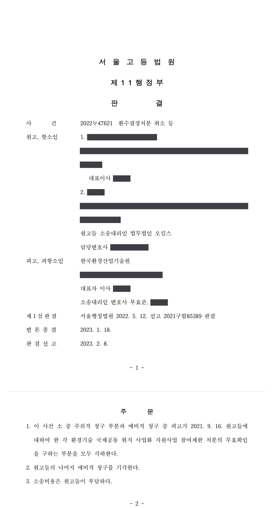
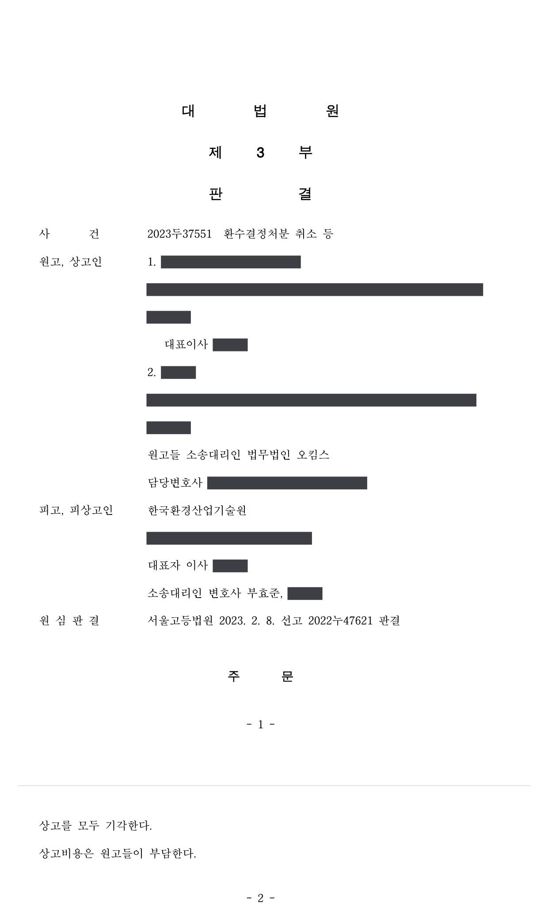
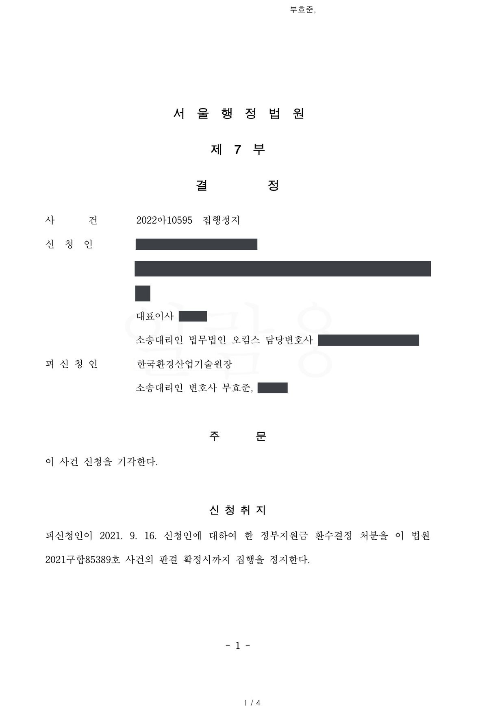

환수결정처분 취소소송
서울행정법원 2021구합85389 · 서울고등법원 2022누47621 · 대법원 2023두37551 · 서울행정법원 2022아10595 · 담당변호사 부효준
판결문




사건의 요지
환경기술 국제공동 현지 사업화 지원사업의 참여제한·환수 통보가 항고소송 대상인 처분인지, 협약에 따른 조치인지가 다투어진 사건입니다. 항소심은 처분성을 부정하여 취소·무효확인 청구를 각하하고 환수금 채무 부존재확인 청구를 받아들이지 않았으며, 대법원에서 상고가 받아들여지지 않아 확정되었습니다.
주제별 사례연구개발비·출연금 환수처분
사건의 주요 내용
원고 회사는 수질오염 방지시설업을 하는 기업으로, 2018년 4월 전문기관과 환경기술 국제공동 현지 사업화 지원사업 협약을 맺고 '축산폐수 자원화 시설의 해외 현지화 사업' 과제를 수행하였습니다. 1차 사업기간(2018년 4월~2019년 2월)에 4억 2,200만 원, 2차 사업기간(2019년 3월~2020년 2월)에 1억 7,300만 원, 합계 5억 9,500만 원의 정부지원금을 받았고, 원고 회사의 직원이 사업책임자였습니다.
현지 농장의 돼지 전량 살처분으로 사업이 제대로 수행되지 않자 전문기관은 최종평가에서 살처분에 관한 근거 제시가 불충분하고 목표 달성을 위한 추가 노력이 없었다는 이유로 '실패'로 판정하였고, 회계법인의 정밀정산에서 시작품 제작비 477,638,900원이 외주처의 현지 송금 서류 미제출과 시작품 임의 철거 등으로 소명되지 않았다고 보아 환수 대상 정부지원금을 522,671,547원으로 산정하였습니다. 전문기관은 2021년 9월 원고 회사에 3년의 참여제한과 522,671,547원의 환수를, 사업책임자에게 3년의 참여제한을 통지하였습니다.
원고들은 전문기관의 장을 상대로 참여제한처분과 환수결정의 취소를 구하는 소송과 집행정지를 신청하였습니다. 집행정지는 환수결정에 따른 손해가 장래 집행을 통해 현실화될 재산상 손해이고 전문기관이 이를 공법상 계약에 따른 조치라고 주장하고 있어 집행이 임박하지 않았다는 이유로 받아들여지지 않았고, 1심은 소를 각하하였습니다. 항소심에서 원고들은 피고를 법인인 전문기관으로 경정하고, 참여제한조치의 무효확인과 환수금 지급채무의 부존재확인을 예비적 청구로 추가하였습니다. 부효준 변호사는 집행정지부터 상고심까지 전문기관을 대리하였습니다.
쟁점
- 법령에 참여제한·환수 규정이 없는 지원사업에서 협약과 관리지침에 따라 이루어진 참여제한·환수 통보가 항고소송의 대상이 되는 행정처분인지, 공법상 계약에 따른 의사표시인지
- 현지 살처분으로 사업이 실패하였다는 사정과 시작품 제작비의 집행이 관리지침상 증빙으로 충분히 소명되었는지
- 중간 감사에서 정상집행으로 검토된 사업비를 최종평가 후 정밀정산에서 불인정하여 환수하는 것이 모순행위금지·신의성실·권리남용금지 원칙에 어긋나는지
원고의 주장
- 제재조치는 전문기관이 공권력을 행사하여 한 행정처분이므로 항고소송으로 취소 또는 무효확인을 구할 수 있다고 주장하였습니다.
- 사업지를 여러 차례 방문하여 살처분 근거를 확보하려 노력하였고 현지 책임자의 확인서도 제출하였는데, 전문기관이 현지 정부의 공문을 요구하면서 객관적 소명이 없다는 이유로 환수한 것은 권리남용금지와 신의성실의 원칙에 어긋난다고 주장하였습니다.
- 시작품 제작비는 전문기관의 사전 승인을 받아 집행하였고 회계법인의 두 차례 감사에서 '정상집행'으로 판단받았는데, 사업 종료 후에야 상세 제작원가의 소명을 요구하며 환수하는 것은 모순행위금지 원칙에 위배되고 권리남용이라고 주장하였습니다.
부효준 변호사의 주장
- 본안 전 항변으로, 이 사업은 법령에 참여제한·환수 규정이 없는 사업이고 제재조치는 공법상 계약인 협약과 협약에 편입된 관리지침에 따라 이루어진 조치이므로, 항고소송의 대상이 되는 행정처분이 아니어서 취소·무효확인 청구는 부적법하다고 주장하였습니다.
- 환수조치는 관리지침 제29조와 별표 5(수행결과가 극히 불량하거나 불성실하게 수행한 과제: 참여제한 3년, 환수 대상 금액 환수)에 따른 것이고, 살처분의 소명자료는 5개월 뒤 작성된 현지 책임자의 확인서 한 장에 그치며, 시작품 제작비의 소명자료도 관리지침이 정한 증빙서류가 아니어서 환수금 채무가 존재한다고 주장하였습니다.
- 앞선 감사에서 지적되지 않았던 사항이 최종평가 후 정밀정산에서 지적되었다고 하여 모순행위금지나 신의성실의 원칙에 어긋나는 것은 아니라고 반박하였습니다.
법원의 판단
항소심(서울고등법원 2022누47621)은 처분과 공법상 계약상 의사표시의 구별에 관한 대법원 판례(2014. 4. 24. 선고 2013두6244 판결, 2019. 2. 14. 선고 2016두33223 판결 등)를 전제로, 환경기술 국제공동 현지 사업화 지원사업에 관하여는 환경기술개발사업과 달리 법령에 참여제한이나 사업비 환수 규정이 없고, 제재조치는 협약에 편입된 관리지침 제29조에 따라 이루어졌으며 관련 통지들에도 관리지침만 근거로 기재되어 '처분'이라는 표현도 없었던 점 등을 들어, 제재조치는 대등한 당사자의 지위에서 협약에 따라 환수금액과 참여제한을 통보한 것일 뿐 행정처분이 아니라고 보았습니다. 이에 따라 취소를 구하는 주위적 청구와 참여제한조치의 무효확인을 구하는 제1 예비적 청구는 모두 각하되었습니다.
환수금 지급채무의 부존재확인을 구하는 제2 예비적 청구에 관하여는, 사업이 제대로 수행되지 않은 점에 다툼이 없고, 살처분의 소명자료가 5개월 뒤 작성된 확인서 한 장에 그치며, 시작품 제작비의 소명자료는 관리지침 별표 9가 정한 증빙서류가 아니라 원고들이 일방적으로 작성한 명세서와 이메일에 불과하다고 보았습니다. 정밀정산에서 앞선 감사 때 지적되지 않은 사항이 지적되었다는 사정만으로 모순행위금지·신의성실·권리남용금지 원칙에 어긋난다고 할 수 없다고 하여 이 청구를 받아들이지 않았습니다.
원고들이 상고하였으나 대법원(2023두37551)은 2023년 6월 상고이유가 상고심절차에 관한 특례법 제4조에 해당한다는 이유로 상고를 모두 받아들이지 않아 항소심 판결이 확정되었습니다.
항고소송의 대상이 되는 행정청의 처분이라 함은 원칙적으로 행정청의 공법상의 행위로서 특정사항에 대하여 법규에 의한 권리의 설정 또는 의무의 부담을 명하거나 기타 법률상의 효과를 직접 발생하게 하는 등 국민의 권리의무에 직접 관계가 있는 행위를 말하고(대법원 1993. 10. 26. 선고 93누6331 판결, 대법원 2008. 9. 11. 선고 2006두18362 판결 등 참조), 행정청이 자신과 상대방 사이의 법률관계에 관하여 일방적인 의사표시를 하였다고 하더라도 곧바로 그 의사표시가 행정청으로서 공권력을 행사하여 행하는 행정처분이라고 단정할 수는 없고, 관계 법령이 상대방의 법률관계에 관하여 구체적으로 어떻게 규정하고 있는지에 따라 그 의사표시가 항고소송의 대상이 되는 행정처분에 해당하는 것인지 아니면 공법상 계약관계의 일방 당사자로서 대등한 지위에서 행하는 의사표시인지 여부를 개별적으로 판단하여야 한다(대법원 1996. 5. 31. 선고 95누10617 판결, 대법원 2014. 4. 24. 선고 2013두6244 판결, 대법원 2015. 8. 27. 선고 2015두41449 판결 등 참조).
서울고등법원 2022누47621 판결 이유 '2. 나. 관련 법리 — 1)'
앞서 든 증거에 변론 전체의 취지를 더하여 인정되는 다음의 사정들을 종합하여 보면, 원고들이 취소 및 무효확인(주위적 및 제1 예비적 청구)의 대상으로 삼고 있는 이 사건 제재조치는 피고가 대등한 당사자의 지위에서 체결한 이 사건 각 협약에 따라 그 상대방인 원고들에게 이 사건 각 협약에 따른 환수금액 액수를 통보하고 그 반환을 구함과 아울러 및 환경기술 국제공동 현지 사업화 지원사업 참여제한을 통보한 것에 불과하고, 이를 구체적 사실에 관한 법집행으로서 공권력의 행사에 해당하는 행정처분이라고 볼 수는 없다.
환경기술산업법은 환경기술개발사업과 환경기술 국제공동 현지 사업화 지원사업을 구분하고 있다. 이에 따라, 환경기술개발사업에 대하여는 환경기술산업법 제5조의2 제1항 등에서 소관 중앙행정기관의 장에게 참여제한 및 사업비 환수 등의 처분을 할 권한을 부여하고 있고, 피고는 같은 법 제31조 제2항 제1호 등에 따라 그에 대한 권한을 위탁받아 행사할 수 있다. 그러나 환경기술산업법 제8조 및 제13조의4에 근거한 환경기술 국제공동 현지 사업화 지원사업에 관하여는 참여기업 등에 대한 참여제한 또는 사업비 환수에 대하여 아무런 규정을 두고 있지 않다.
서울고등법원 2022누47621 판결 이유 '2. 라. 판단' 및 '2)'
피고가 실시한 정밀정산은 이 사건 관리지침에 따라 진행된 것으로, 앞서 실시한 감사에서 사업비 집행이 적정한 것으로 검토되었다가 최종평가 후 정밀정산 단계에서 앞서 지적되지 않은 사항이 지적되었다고 하여 이를 모순행위금지의 원칙에 반한다거나 권리남용금지의 원칙 및 신의성실의 원칙에 위배된다고 할 수 없다.
서울고등법원 2022누47621 판결 이유 '3. 나. 판단 — 3)'
※ 판결 이유 가운데 이 사건의 판단 기준이 된 부분을 그대로 옮긴 것으로, 당사자 이름 등은 가렸습니다.
이 사건이 보여 주는 것
같은 전문기관이 하는 참여제한·환수라도, 그 근거가 법령(국가연구개발혁신법, 환경기술산업법 등)에 있는지 아니면 협약과 관리지침에만 있는지에 따라 소송 형태가 달라집니다. 이 사건처럼 법령에 제재 규정이 없는 지원사업에서 협약에 따라 이루어진 제재조치는 행정처분이 아니므로 취소소송·무효확인소송은 각하되고, 환수금 채무의 부존재확인 같은 당사자소송으로 다투어야 합니다. 통지문에 적힌 근거규정이 관리지침만인지 확인하는 것이 출발점입니다.
본안에서는 사업 실패의 원인이 된 외부 사정(현지 살처분)을 뒷받침하는 객관적 자료와, 시작품 제작비 등 큰 금액에 대한 관리지침상 증빙서류를 사업 수행 중에 갖추어 두는 것이 중요하다는 점이 확인되었습니다. 중간 감사에서 '정상집행'으로 검토되었더라도 최종평가 후 정밀정산에서 다시 지적될 수 있고, 그것만으로 신의성실·모순행위금지 위반이 되지는 않습니다.
비슷한 처분을 받으셨다면
행정처분은 처분이 있음을 안 날부터 90일 이내에 행정심판이나 취소소송으로 다투어야 하고, 기간이 지나면 돌이킬 수 없는 처분은 집행정지를 서둘러야 합니다. 처분서를 받은 날짜부터 확인해 드립니다.